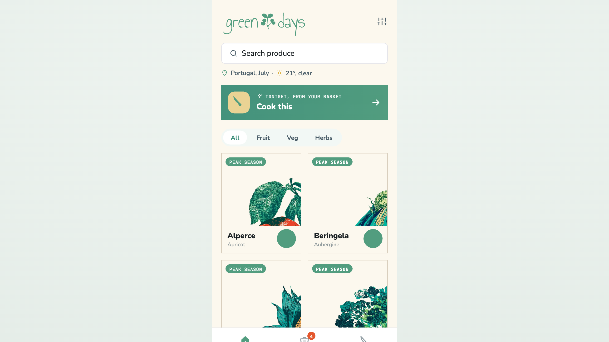
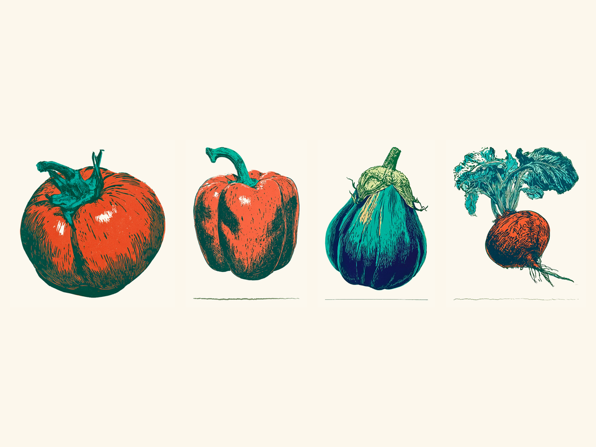
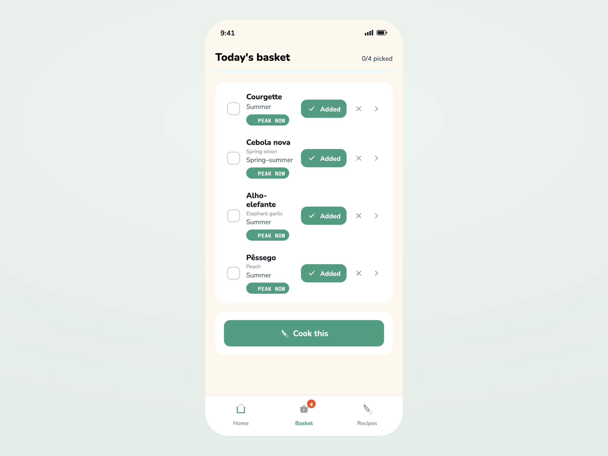
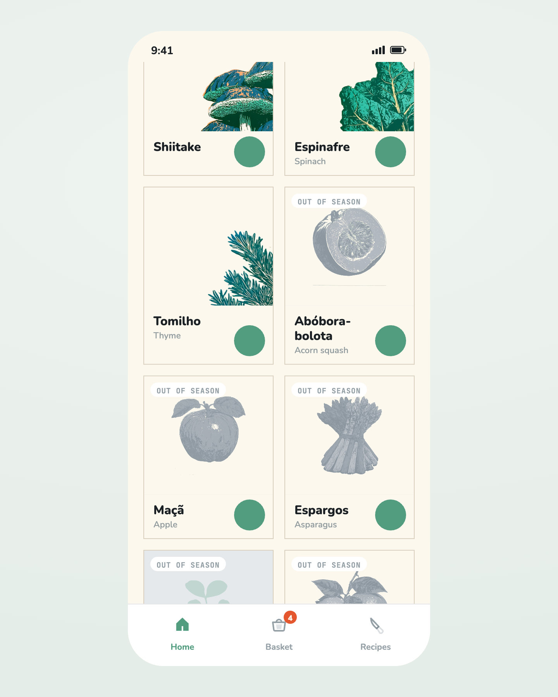
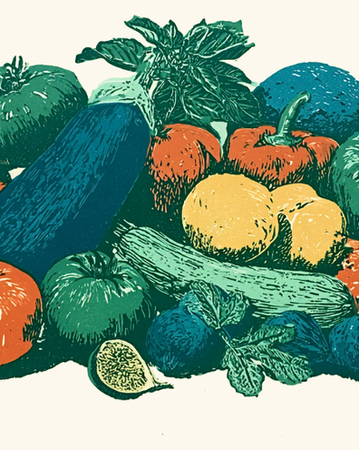
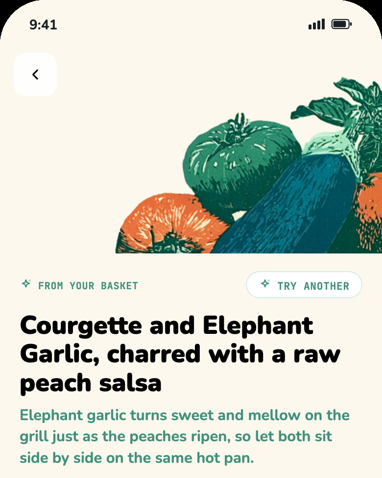

A farmers‑market app that shows what's actually in season near you, then turns your real basket into one confident recipe — concept to a live product across 14 European markets in five days, one designer directing the whole AI‑native stack.

Green Days is part of The Lab, the section of my portfolio where I ship small, personal, data‑driven pieces, each with a thesis and a personal hook. It surfaced right after I'd finished an earlier Lab piece, Atlas of Tongues, a linocut‑adjacent language map, during a brainstorm about what to build next. The want was simple: an app I could open while standing at the market to know what's actually in season, plus a recipe idea that used several of those things together.
The real idea showed up once I asked what nothing else does well. Seasonal charts already exist a thousand times over. What's missing is the other half: I'm holding a handful of produce, now what do I cook. Once seasonality became the grammar of the whole app rather than a screen you visit, it was worth building. The bilingual produce names, the hand‑pressed illustrations, and the recipe voice all trace back to the same source, I translate Chinese poetry and describe myself as Poet, Polyglot, Painter, and this was a chance to let that identity become actual product features rather than a bio line.
Every stage of the stack had a job and a directing hand behind it. Claude Design built the UI and the design system, a warm "sunny Sunday morning" palette with a handwritten wordmark. The illustration set was the hardest craft problem: forty‑plus vegetables that all needed to look like siblings. I locked a written style bible, generated anchor prints until one nailed a hand‑pressed linocut look at thumbnail size, then locked that as a Midjourney visual reference so the rest of the set stayed consistent. A local Python pipeline normalized every print, flattened backgrounds to the exact palette, and derived the faded off‑season versions programmatically.
The riskiest part was the recipe engine itself, live Anthropic Sonnet 5 steered by written principles and three worked anchor recipes, not a loose prompt. I validated it in a real Lisbon shop: I named a basket, courgette, onion, garlic, and a peach, and the engine returned "Courgette and Peach, warm from a garlic refogado," with sardines suggested as the in‑season protein. It's a recipe I would never have arrived at on my own, and it sounded delicious. That was the moment the concept proved itself, not in a spec, in a shop.




